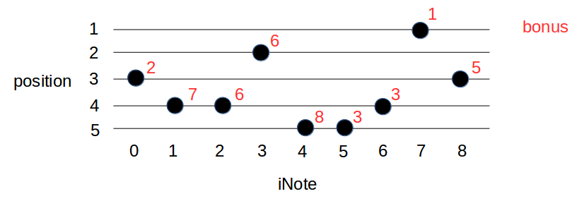

Task main statement, mandatory. You are currently using {LANGPROG}, lowercase {LANGPROG_L}.
This optional block is for additional constraints (in addition to cpu, memory, time, etc. limits):
This optional block is to explain the input.
This optional block explains the expected output.